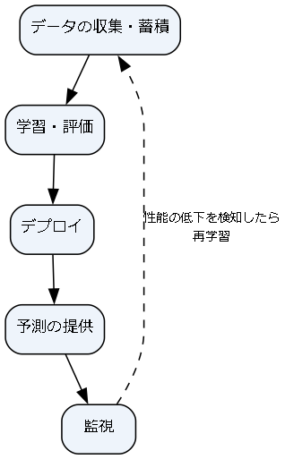

13. 実務への適用
ここまで、機械学習と深層学習の主な手法を説明してきた。しかし、実務で機械学習を使ったシステムを作り、運用し続けるには、モデルの学習以外にも考えるべきことが多い。この章では、ライブラリの選び方、再現性の確保、モデルの解釈、運用、そして責任ある利用について、実務で押さえておくべき点をまとめる。
13.1. 主なライブラリ
Python には機械学習のための豊富なライブラリがある。本書で扱った内容と、主なライブラリの対応を次に示す。
ライブラリ |
用途 |
本書の関連する章 |
|---|---|---|
NumPy |
多次元配列の計算。ほぼすべてのライブラリの基盤。 |
第 2 章、各章のスクラッチ実装 |
pandas |
表形式データの読み込み・加工・集計。 |
第 3 章 |
scikit-learn |
前処理、古典的な機械学習の手法、評価、ハイパーパラメータ探索。 |
第 3 章〜第 8 章 |
LightGBM、XGBoost |
高速な勾配ブースティング。 |
第 7 章 |
PyTorch |
深層学習のフレームワーク。自動微分と GPU による計算。 |
第 9 章〜第 12 章 |
Hugging Face Transformers |
学習済みの Transformer モデルの利用・ファインチューニング。 |
第 12 章 |
各ライブラリの詳しい使い方は、公式のドキュメント（[NumPyDoc]、[SklearnDoc]、[PyTorchDoc] など）を参照してほしい。
深層学習のフレームワークには、PyTorch のほかに TensorFlow（Keras）や JAX などがある。研究と実務の両方で PyTorch が広く使われているが、基本的な考え方（テンソル、自動微分、層、最適化手法）はどのフレームワークでも共通である。
本書では、重要な手法を NumPy で一から実装した。実務では、正しさが検証され、高速化されたライブラリを使うべきである。ただし、仕組みを理解していれば、ライブラリのハイパーパラメータの意味を理解し、うまくいかないときに原因を推測できる。
13.2. 再現性の確保
機械学習の結果は、データ、コード、ライブラリのバージョン、乱数など多くの要因で変わる。後から同じ結果を再現できなければ、改善の効果を正しく比較できず、問題が起きたときに原因を調べることもできない。再現性を確保するには、次の点に注意する。
乱数のシードを固定する: データの分割、モデルの初期化、ミニバッチのシャッフルなどに乱数が使われる。scikit-learn では
random_state引数、PyTorch ではtorch.manual_seedなどで固定する。ただし、GPU を使った計算では、シードを固定しても結果がわずかに変わることがある。ライブラリのバージョンを記録する:
requirements.txtなどで、使ったライブラリのバージョンを固定する。データのバージョンを管理する: どの時点のデータで学習したかを記録する。データは時間とともに追加・修正されるためである。
実験の記録を残す: ハイパーパラメータ、評価結果、学習したモデルを、実験ごとに記録する。MLflow などの実験管理ツールが使える。
13.2.1. パイプラインでデータリークを防ぐ
第 3 章で、前処理の統計量は訓練データだけから求めるべきであることを説明した。交差検証を行う場合、各分割の学習用データだけから前処理を学習する必要がある。前処理とモデルを scikit-learn の Pipeline にまとめておけば、GridSearchCV などがこれを自動的に正しく扱ってくれる。また、学習済みのパイプラインをそのまま保存すれば、本番環境で前処理の実装が学習時とずれることも防げる。
次のサンプルは、糖尿病の進行度を予測する回帰問題（scikit-learn 付属のデータセット）で、これらの点を実践したものである。
1def main() -> None:
2 data = load_diabetes()
3 x_train, x_test, y_train, y_test = train_test_split(data.data, data.target, test_size=0.2,
4 random_state=SEED)
5
6 # ベースライン: 訓練データの平均値を常に答える
7 baseline = mean_absolute_error(y_test, np.full_like(y_test, y_train.mean()))
8 print(f"ベースライン (平均値) の MAE = {baseline:.1f}")
9
10 cv = KFold(n_splits=5, shuffle=True, random_state=SEED)
11 candidates = {
12 "Ridge": GridSearchCV(
13 Pipeline([("scale", StandardScaler()), ("model", Ridge())]),
14 {"model__alpha": [0.1, 1.0, 10.0]},
15 cv=cv, scoring="neg_mean_absolute_error",
16 ),
17 "勾配ブースティング": GridSearchCV(
18 HistGradientBoostingRegressor(random_state=SEED),
19 {"max_depth": [2, 3], "learning_rate": [0.03, 0.1]},
20 cv=cv, scoring="neg_mean_absolute_error",
21 ),
22 }
23 for name, search in candidates.items():
24 search.fit(x_train, y_train)
25 print(f"{name}: 交差検証 MAE = {-search.best_score_:.1f}, 最良の設定 = {search.best_params_}")
26
27 # 交差検証の結果が最も良かったモデルを選び、最後に一度だけテストデータで評価する
28 best_name = max(candidates, key=lambda name: candidates[name].best_score_)
29 best = candidates[best_name].best_estimator_
30 print(f"{best_name} のテストデータでの MAE = {mean_absolute_error(y_test, best.predict(x_test)):.1f}")
31
32 with tempfile.TemporaryDirectory() as tmp:
33 path = Path(tmp) / "model.joblib"
34 joblib.dump(best, path)
35 loaded = joblib.load(path)
36 same = np.allclose(loaded.predict(x_test), best.predict(x_test))
37 print("保存・読み込み後も同じ予測になるか:", same)
38
39 result = permutation_importance(best, x_test, y_test, n_repeats=20, random_state=SEED,
40 scoring="neg_mean_absolute_error")
41 order = np.argsort(result.importances_mean)[::-1][:3]
42 for i in order:
43 print(f"特徴量 {data.feature_names[i]}: 重要度 = {result.importances_mean[i]:.2f}")
6〜8 行目で、常に訓練データの平均値を答えるベースライン（第 6 章）の性能を求めている。
10〜22 行目で、標準化とリッジ回帰を組み合わせたパイプラインと、勾配ブースティングのそれぞれについて、交差検証によるハイパーパラメータの探索を定義している。
27〜30 行目で、交差検証の評価値が最も良かったモデル（この例ではリッジ回帰）を選び、最後に一度だけテストデータで評価している。
32〜37 行目で、学習済みのパイプラインを
joblibでファイルに保存し、読み込み直して同じ予測が得られることを確認している。39〜43 行目は、次節で説明する順列重要度の計算である。
1ベースライン (平均値) の MAE = 59.2
2Ridge: 交差検証 MAE = 43.9, 最良の設定 = {'model__alpha': 10.0}
3勾配ブースティング: 交差検証 MAE = 45.9, 最良の設定 = {'learning_rate': 0.1, 'max_depth': 2}
4Ridge のテストデータでの MAE = 46.1
5保存・読み込み後も同じ予測になるか: True
6特徴量 s5: 重要度 = 7.66
7特徴量 bmi: 重要度 = 5.54
8特徴量 bp: 重要度 = 3.99
この例では、データが 442 件と少ないこともあり、単純なリッジ回帰の方が勾配ブースティングより良い結果になった。第 7 章で「表形式データでは勾配ブースティングが強い」と述べたが、常にそうなるとは限らない。単純なモデルから順に試し、比較することが重要である。
サンプルコードの全体は ch13_pipeline.py からダウンロードできる。
joblib や Python の pickle で保存したファイルは、読み込むときに任意のコードを実行できてしまう。信頼できない提供元のファイルを読み込んではならない。また、保存時と異なるバージョンのライブラリでは正しく読み込めないことがある。
13.3. モデルの解釈
モデルがなぜその予測をしたのかを説明できることは、モデルの不具合の発見、利用者の信頼の獲得、規制への対応などのために重要である。
線形モデルの重み: 特徴量を標準化していれば、重みの大きさと符号から各特徴量の影響を読み取れる（第 4 章）。
決定木のルール: 浅い決定木は、if-then ルールとしてそのまま読める（第 7 章）。
順列重要度（permutation importance）: ある特徴量の値をサンプル間でランダムに並べ替えたとき、モデルの性能がどれだけ下がるかで、その特徴量の重要度を測る。どのようなモデルにも使え、学習に使っていないデータ（検証データやテストデータ）で計算できる。上の例では、s5（血清の検査値の 1 つ）と bmi が予測に大きく寄与していることが分かる。
SHAP: 個々の予測について、各特徴量がどれだけ予測値を押し上げた（押し下げた）かを計算する手法である。
いずれの方法も「モデルがどの特徴量を使っているか」を示すものであり、「その特徴量を変えれば結果が変わる」という因果関係を示すものではないことに注意する。
13.4. 運用
機械学習のシステムは、モデルを作って終わりではない。運用を始めてからも、継続的に監視と改善を行う必要がある。機械学習のシステムを継続的に開発・運用するための考え方や仕組みを MLOps と呼ぶ。

図 13.1 機械学習システムの運用のサイクル
13.4.1. 予測の提供方法
バッチ予測: 1 日に 1 回などの頻度で、まとめて予測を計算して保存しておく。需要予測やレコメンドの事前計算などに向いている。
オンライン予測: リクエストのたびに予測を計算して返す。不正検知のように即時の判断が必要な場合に使う。予測にかかる時間（レイテンシ）が重要になる。
いずれの場合も、学習時と予測時で前処理や特徴量の計算方法がずれないように注意する。学習時と予測時の差異による性能の低下は、運用でよく起こる問題の 1 つである。
13.4.2. データドリフト
機械学習のモデルは、学習に使ったデータと同じ傾向のデータが将来も来ることを前提にしている。しかし、現実の世界は変化する。
データドリフト: 入力データの分布が変化する。例: 新しい商品の追加、利用者層の変化、センサーの交換。
コンセプトドリフト: 入力と正解の関係そのものが変化する。例: 景気の変化で購買行動が変わる、不正の手口が変わる。
これらによって、運用中にモデルの性能が徐々に低下する。そのため、入力データの分布や予測値の分布、（正解が後から得られる場合は）実際の性能を継続的に監視し、変化を検知したら新しいデータで再学習する仕組みを用意しておく。
機械学習のシステムは、通常のソフトウェアに比べて、データへの依存や設定の複雑さから技術的負債を抱えやすいことが指摘されている [Sculley2015]。モデルのコードはシステム全体のごく一部であり、データの収集・検証、特徴量の計算、監視などの周辺の仕組みの方がはるかに大きくなることが多い。
13.5. 責任ある利用
機械学習のモデルは、人の生活に影響する判断に使われることがある。技術的な性能だけでなく、次の点にも配慮する必要がある。
公平性: 訓練データに含まれる社会的な偏りをモデルが再現・増幅し、性別や人種などによって不当に異なる扱いをすることがある。属性ごとに性能や判定結果の分布を確認する。
説明可能性: 融資の審査や採用のように、判断の理由の説明が求められる場面がある。解釈しやすいモデルを選ぶ、前節の解釈の手法を使う、などの対応を検討する。
プライバシー: 訓練データに個人情報が含まれる場合、その取り扱いに注意する。モデルが訓練データの一部を記憶し、出力に含めてしまうこともある。
セキュリティ: 人間には分からない小さな変化を入力に加えてモデルを誤認識させる攻撃（敵対的サンプル）や、訓練データに不正なデータを混入させる攻撃が知られている。
人間の関与: 誤りの影響が大きい判断では、モデルの予測を最終判断とせず、人間が確認する仕組みを設ける。
13.6. よくある失敗とチェックリスト
最後に、機械学習のプロジェクトでよくある失敗を、確認すべき項目としてまとめる。
段階 |
確認項目 |
|---|---|
課題設定 |
解決したい業務上の課題と、モデルの評価指標が対応しているか。機械学習を使わない方法と比較したか。 |
データ |
予測時に使えない情報が特徴量に含まれていないか（データリーク）。訓練データは運用時のデータを代表しているか。ラベルは正しいか。 |
分割 |
時系列データを時間で分割しているか。同じ対象のデータが訓練データとテストデータに分かれていないか。 |
評価 |
テストデータを一度しか使っていないか。ベースラインと比較したか。不均衡データで正解率だけを見ていないか。 |
モデル |
単純なモデルから試したか。過学習していないか（訓練誤差と検証誤差の差）。 |
運用 |
学習時と予測時の前処理は同じか。性能の監視と再学習の仕組みがあるか。 |
責任 |
公平性・説明可能性・プライバシーへの配慮は十分か。 |
13.7. まとめ
実務では検証済みのライブラリを使い、本書で学んだ仕組みの理解はハイパーパラメータの調整や問題の原因の究明に生かす。
乱数のシード、ライブラリとデータのバージョン、実験の記録を管理して再現性を確保する。前処理とモデルはパイプラインにまとめる。
順列重要度などの手法でモデルを解釈できるが、因果関係を示すものではない。
運用中は、データドリフトやコンセプトドリフトによる性能の低下を監視し、再学習する。
公平性、説明可能性、プライバシー、セキュリティにも配慮して機械学習を利用する。